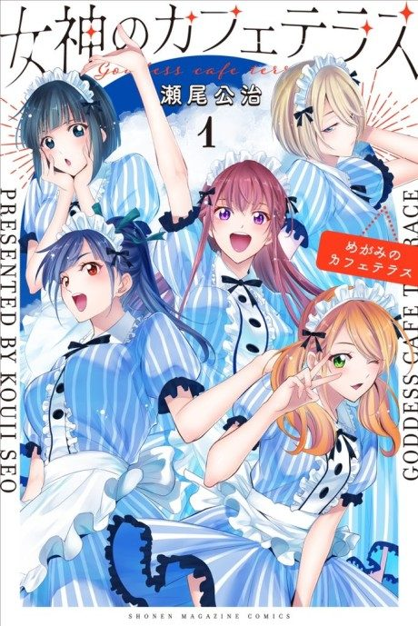

The Café Terrace and Its Goddesses
女神のカフェテラス
After the anime, read the manga from Chapter 90.
7.1AniList score
—Animeter, no votes yet
24episodes, 2 seasons
Is it worth pushing through?
Built from what visitors report across all 2 seasons (24 episodes).
Loading reports…Checking what other people said about this one.
Sign in above with your email to add your report.